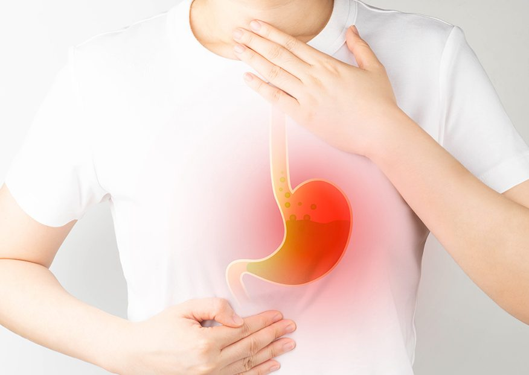

How does reflexology manage acid reflux?

How Does Reflexology Manage Acid Reflux?
Introduction
Acid reflux, also known as gastroesophageal reflux disease (GERD), is a common digestive disorder where stomach acid flows back into the esophagus, causing discomfort, heartburn, and indigestion. While conventional treatments include antacids and medications, many people seek natural remedies like reflexology to alleviate symptoms.
Reflexology is an alternative therapy that applies pressure to specific points on the feet, hands, and ears to promote healing and balance in the body. This article explores how reflexology can help manage acid reflux, its key techniques, and the benefits it offers for digestive health.
Understanding Acid Reflux
What Causes Acid Reflux?
Acid reflux occurs when the lower esophageal sphincter (LES) fails to close properly, allowing stomach acid to move up the esophagus. Common causes include:
- Poor diet (spicy, fatty, and acidic foods)
- Overeating
- Obesity
- Stress and anxiety
- Smoking and alcohol consumption
- Hiatal hernia
- Pregnancy
Symptoms of Acid Reflux
- Heartburn
- Regurgitation of food or sour liquid
- Chest pain
- Difficulty swallowing
- Chronic cough
- Sore throat
- Bloating
How Reflexology Can Help Manage Acid Reflux
Reflexology stimulates specific pressure points linked to digestive organs, helping to improve their function and restore balance. The therapy aims to:
- Improve digestion and nutrient absorption
- Reduce stress and anxiety (which can trigger reflux)
- Enhance circulation and lymphatic drainage
- Strengthen the lower esophageal sphincter (LES)
- Alleviate bloating and discomfort
Key Reflexology Points for Acid Reflux
- Solar Plexus Point – Located at the center of the foot, below the ball. Pressing this point helps relieve stress and improves digestive function.
- Diaphragm and Stomach Reflex Points – Found on the arch of the foot, these points aid digestion and regulate stomach acid production.
- Esophagus and LES Reflex Points – Situated along the inner edge of the foot, massaging these points strengthens the LES and prevents acid reflux.
- Liver and Gallbladder Reflex Points – Located on the right foot, these points support liver detoxification and bile production, which aids digestion.
- Intestinal Reflex Points – Found along the sole of the foot, stimulating these points promotes healthy digestion and reduces bloating.
Reflexology Techniques for Acid Reflux Relief
To effectively manage acid reflux, follow these reflexology techniques:
- Thumb Walking: Use your thumb to apply gentle pressure and walk along the digestive reflex points.
- Circular Massage: Rotate your thumb in small circles over the stomach and diaphragm points.
- Press and Hold: Apply steady pressure on the solar plexus point for 30 seconds to relieve stress.
- Kneading Motion: Use a gentle kneading motion on the intestinal reflex points to enhance digestion.
- Daily Practice: For best results, perform reflexology for 10-15 minutes daily.
Additional Natural Remedies to Complement Reflexology
While reflexology is effective, combining it with other natural remedies can enhance results:
- Maintain a Healthy Diet
- Avoid spicy, acidic, and fatty foods
- Eat smaller meals and chew food thoroughly
- Include fiber-rich foods like fruits and vegetables
- Stay Hydrated
- Drink water regularly but avoid excess fluids during meals
- Herbal teas like ginger and chamomile aid digestion
- Manage Stress
- Practice deep breathing exercises
- Engage in yoga or meditation
- Sleep Properly
- Elevate your head while sleeping
- Avoid lying down immediately after meals
- Exercise Regularly
- Engage in light activities like walking to improve digestion
- Avoid intense workouts right after eating
Benefits of Reflexology for Digestive Health
- Non-Invasive and Natural: No medications or side effects.
- Promotes Relaxation: Reduces stress, which is a major trigger for acid reflux.
- Enhances Digestion: Stimulates the digestive system for better food breakdown and absorption.
- Improves Blood Circulation: Increases oxygen and nutrient supply to digestive organs.
- Holistic Healing: Addresses the root cause rather than just symptoms.
Conclusion
Reflexology offers a natural and holistic way to manage acid reflux by stimulating specific pressure points that promote digestive health. When combined with dietary adjustments, stress management, and healthy lifestyle choices, reflexology can significantly reduce acid reflux symptoms. If you suffer from chronic acid reflux, consider incorporating reflexology into your wellness routine for long-term relief.